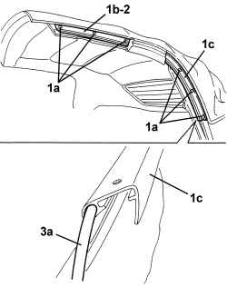
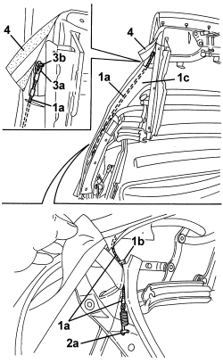
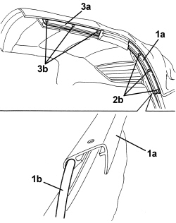

7030H44 HOOD SIDE TENSIONING ROD - R.R.
- Path
- Procedures > 70 FITTINGS > 7030 SUN ROOF/GLASS PANEL > 7030H AUTOMATICALLY OPERATED HOOD > 7030H44 HOOD SIDE TENSIONING ROD - R.R.
- Kind
- repair procedure (removal / refitting; the operation number is the code)
- Applies to
- engines: 2.2 JTS, 3.2 JTS; all production periods
- Interactive page
- https://sloeber94.github.io/elrnDB-aBrrSpdr/en/#/946003675
Applies to: engines: 2.2 JTS, 3.2 JTS; all production periods
 Removing
Removing
 Refitting
Refitting- Cover vehicle bodywork and upholstery with protective cloth.
Op. 7030H20 HOOD FRONT PANEL - R.R.
1. Extract front side seal (1a) sliding it out of retainers (1b).

Applies to: engines: 2.2 JTS, 3.2 JTS; all production periods
1. Extract rear side seal (1a) sliding it out of retainers (1b).

Applies to: engines: 2.2 JTS, 3.2 JTS; all production periods
1. Drill out rivets (1a) securing side drip channels (1b) and (1c).
2. Recover front side drip channel (1b).
3. Withdraw rear side drip channel (1c) from hood canvas lining strip (3a).

Applies to: engines: 2.2 JTS, 3.2 JTS; all production periods
1. Disconnect hood canvas adhesive edge (1a), until it is possible to work on side link front terminal (1c) retainer (1b).
2. Open retainer (1b) slightly and disconnect front terminal (1c).
3. Disconnect side link rear terminal (3a).
4. Remove side link (4a) detaching it from the hood canvas (4b) and ring (4c).

Applies to: engines: 2.2 JTS, 3.2 JTS; all production periods
Refitting
Removing- Check that the side link is not damaged.
1. Position side link (1a) engaging it to ring (1b) and the hood canvas (1c).
2. Connect side link rear terminal (2a).
3. Connect front terminal (3a) and close retainer (3b).
4. Re-position and glue the adhesive edge.

Applies to: engines: 2.2 JTS, 3.2 JTS; all production periods
1. Slide rear side drip channel (1a) into hood canvas lining strip (1b).
2. Position rear side drip channel (1a) and secure it with rivets (2b).
3. Position front side drip channel (3a) and secure it with rivets (3b).

Applies to: engines: 2.2 JTS, 3.2 JTS; all production periods
- Insert the rear side seal in its housing, engaging it into the retainers.
- Insert the front side seal in its housing, engaging it into the retainers.
Op. 7030H20 HOOD FRONT PANEL - R.R.
- Check that the hood and door windows work correctly.